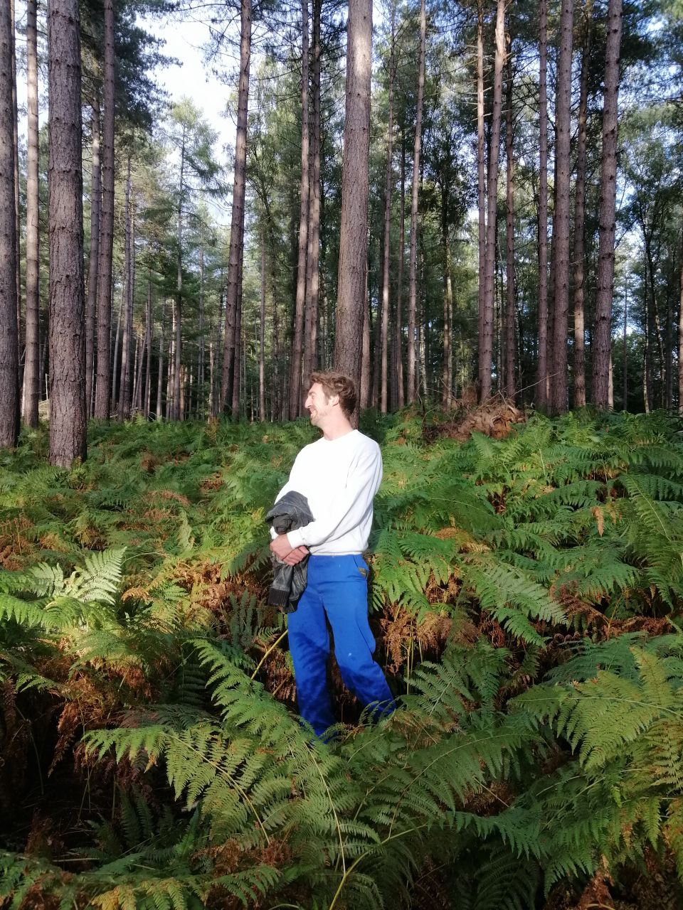
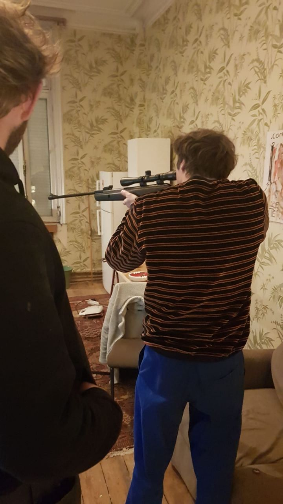

if i were an antoine
i'd press right
if i were an antoine
i'd be the light in your life
if i were an antoine
i'd be crossing roads with your bitch
if i were an antoine
i'd be drinking beers
if i were an antoine
i'd be a hunter, not the hunted
if i were an antoine
i'd bring justice to the wicked
if i were an antoine
i'd be mysterious...
if i were an antoine
i'd be as solid as a statue
but in the end...
i'd have drank too many beers
happy birthday tony!!!
now go unlock your present
you must say the secret word
find it somewhere